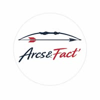
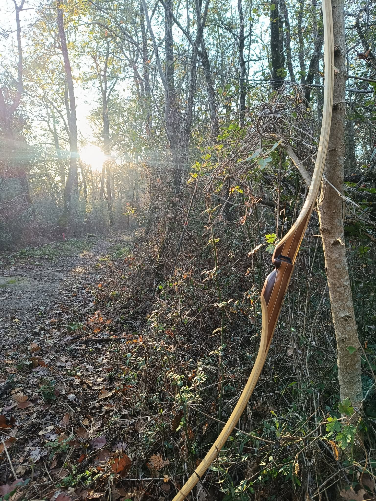

Quelques réalisations
arcs&Fact'
Facteur d'arcs artisanaux

Facteur d'arcs

Facteur d'arcs
Chaque arc Arcs&Fact' est une pièce singulière. Le choix du bois, la mise en forme, l'équilibrage et les finitions sont réalisés avec patience et précision.
Un travail artisanal où la matière guide le geste. Bois nobles, techniques traditionnelles et recherche de performance s'accordent pour donner naissance à des arcs faits pour durer.
Facteur d'arcs artisanaux
Pour toute information concernant une réalisation ou un projet d'arc, contactez Arcs&Fact'.